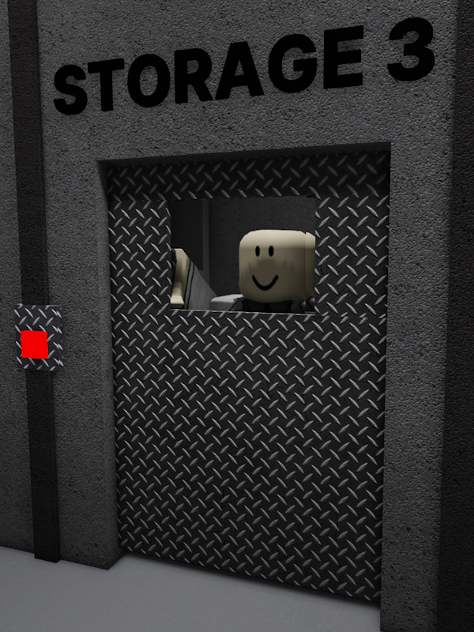

Gerald

Gerald is one of the most notable characters from Test Place: Classics. He works as a scientist for Test Place Research Facility.
He is stuck in the Storage Room 3 of the nuclear warhead sector.
Trivia
• It is unknown how gerald got stuck in the storage room.
• Gerald is credited in TPCL's ending.
• Gerald has the same name as LuaTastic's white maine coon cat, although they don't have any relation with each other.
• If you try to open Storage Room 3, where Gerald is trapped, the door will not budge.
• Gerald was added on the day when the nuclear warhead update came out.
• If you look closely at the shelves behind Gerald, there is a burger with acid leaking out of it and a syringe with purple glowing liquid in it.
• Gerald is credited in TPCL's ending.
• Gerald has the same name as LuaTastic's white maine coon cat, although they don't have any relation with each other.
• If you try to open Storage Room 3, where Gerald is trapped, the door will not budge.
• Gerald was added on the day when the nuclear warhead update came out.
• If you look closely at the shelves behind Gerald, there is a burger with acid leaking out of it and a syringe with purple glowing liquid in it.